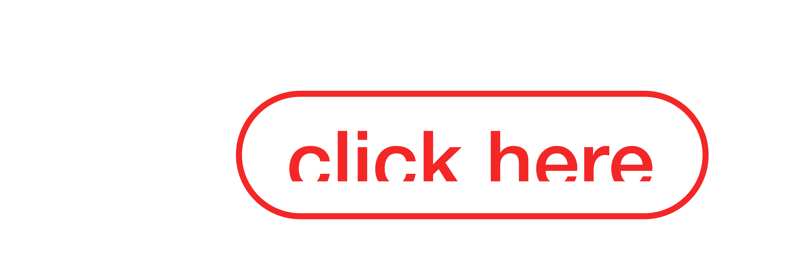
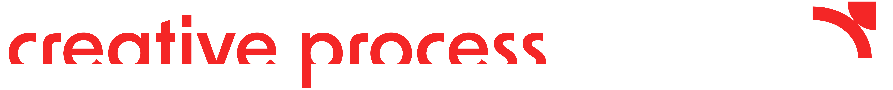

The Hidden Gems Of Malta
Website Design

I aspired to create a platform that showcases the hidden beauty of Malta, making this knowledge
accessible both to locals and to tourists visiting our islands. My vision was to develop a website
that
surpasses the quality and usefulness of many existing sites currently available online. Typically,
most
websites in this field fall into one of several categories: some consist solely of visitor reviews,
often lacking official or reliable information—such as those found on sites like Travelodge—while
others
focus narrowly on a single location. In addition, many existing sites are little more than personal
travel blogs written by individuals with a passion for exploration.
I therefore sought to create a truly valuable and practical resource: an easy-to-navigate website
featuring a diverse range of locations and picturesque spots across Malta, all gathered in one
place. To
complement this, I also included a carefully curated selection of Malta’s finest and most beautiful
hotels. While these accommodations may not always be the most affordable, they are highly
recommended
for offering exceptional quality and memorable experiences. The aim was to consider the entire
package
that travellers look for when planning their stay in Malta, combining natural beauty, comfort, and
cultural richness.
In terms of design, I was particularly drawn to the colour palette of blue, yellow, and white. These
colours evoke a sense of paradise—bringing to mind sandy beaches, clear skies, and the warmth of the
Mediterranean—while also creating a pleasing visual contrast. The palette is intended to convey a
distinctly touristic atmosphere, perfectly suited to the spirit of the Maltese islands.



Cotton Drawstring Bags:
Portable visibility during public event activities
Coasters:
Used during meetings and encourage conversation in social gathering spaces

Tote bags:
Used as a sustainable promotion carrying the brand identity
everywhere
Keychains:
For giveaways, as an everyday reminder of international cooperation values